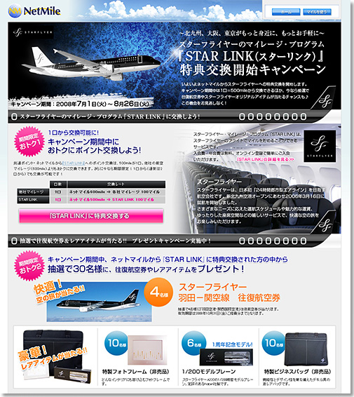

|
2008年7月1日
株式会社ネットマイル
ネットマイル社、スターフライヤー社と提携
航空マイレージプログラム『ＳＴＡＲ ＬＩＮＫ』への交換を開始
～航空会社との提携数をさらに拡大、7社に～
インターネット上の共通ポイントプログラムを運営する株式会社ネットマイル（本社：東京都千代田区、代表取締役社長：山本雅、以下、ネットマイル社）は、株式会社スターフライヤー（本社：福岡県北九州市、代表取締役社長：堀高明、以下、スターフライヤー社）と提携し、同社の航空マイレージプログラム『ＳＴＡＲ ＬＩＮＫ（スターリンク）』との特典交換サービスを本日2008年7月1日（火）より開始いたします。
ネットマイル社は、2001年のサービス開始当初から、航空マイレージへの交換を重要と捉えており、これまで、全日本空輸、ノースウエスト航空、ユナイテッド航空、アメリカン航空、キャセイパシフィック航空、アリタリア航空と提携してまいりました。
今回のスターフライヤー社との提携により、航空会社との提携は７社となり、インターネットポイント・サービス業界では最多となります。
今回の『ＳＴＡＲ ＬＩＮＫ』特典交換サービス開始にあたり、『ネットマイル』から『ＳＴＡＲ ＬＩＮＫ』への交換レートと口数が優遇されるサービスや、抽選で30名様に往復航空券やレアアイテムをプレゼントする「『ＳＴＡＲ ＬＩＮＫ』特典交換開始キャンペーン」を7月1日（火）～8月26日（火）までの期間、実施いたします。
ネットマイル社ではこれからも、累計登録会員数約386万ユーザーの利便性向上を目指し、ユーザーサービスの拡充に努めてまいります。
■『ネットマイル』から『ＳＴＡＲ ＬＩＮＫ』への特典交換サービス概要
| 交換開始日 |
2008年7月1日（火） |
| 交換条件 |
ネットマイルの会員ご本人が『ＳＴＡＲ ＬＩＮＫ』会員であること。
（『ネットマイル』から『ＳＴＡＲ ＬＩＮＫ』への移行のみ） |
| 交換レート |
ネットマイル600mile（1口）→ ＳＴＡＲ ＬＩＮＫ100マイル |
| 最低交換数 |
2口から移行可能（1,200mile＝ＳＴＡＲ ＬＩＮＫ200マイル）
※2008年7月1日（火）～2008年8月26日（火）までは、キャンペーン期間として1口から交換可能となります。 |
|
■『ＳＴＡＲ ＬＩＮＫ（スターリンク）』特典交換開始キャンペーン
http://www.netmile.co.jp/cpn/spend_080701/
1.特典交換優遇レートキャンペーン
| 期間 |
2008年7月1日（火） ～ 2008年8月26日（火） |
| 内容 |
期間中、『ネットマイル』から『ＳＴＡＲ ＬＩＮＫ』への交換レートと口数を優遇。
通常： 600mile ⇒ ＳＴＡＲ ＬＩＮＫ100マイル 2口から移行可能
↓
期間中： 500mile ⇒ ＳＴＡＲ ＬＩＮＫ100マイル 1口から移行可能 |
|
2.プレゼントキャンペーン
| 期間 |
2008年7月1日（火） ～ 2008年8月26日（火） |
| 内容 |
期間中、ネットマイルからＳＴＡＲ ＬＩＮＫに交換された方の中から抽選で30名様に往復航空券やレアアイテムをプレゼント
※詳細はキャンペーンページにてご確認ください。 |
|
■ネットマイル社 「スターフライヤー『ＳＴＡＲ ＬＩＮＫ』特典交換開始キャンペーン」ページ

【株式会社スターフライヤーについて】
http://www.starflyer.jp/
| 社名 |
株式会社スターフライヤー |
| 代表取締役 |
堀 高明 |
| 所在地 |
〒802-0003 福岡県北九州市小倉北区米町二丁目2番1号 新小倉ビル |
| 資本金 |
58億3千3百万円 |
| 設立 |
2002年12月17日 |
| 事業内容 |
航空運送事業 |
|
【株式会社ネットマイルについて】
http://www.netmile.co.jp/
2000年11月設立。三井物産株式会社の連結子会社で、インターネット上の共通ポイントプログラム「ネットマイル」を運営。同社のIT事業戦略の一端を担う。
ネットマイル社は、2001年4月にサービスを開始。累計加盟サイト数900サイト、累計登録会員数約386万人（2008年5月末現在）の規模は、日本最大級。 2007年12月、インターネット業界最大規模のオンラインイベントである『 Web of the Year 2007 』ポイント部門で第1位に選ばれる。
| 社名 |
株式会社ネットマイル |
| 代表取締役 |
山本 雅 |
| 所在地 |
〒101-0054 東京都千代田区神田錦町3-26 一ツ橋 SIビル 9F |
| 資本金 |
396百万円 |
| 設立 |
2000年11月7日 |
| 事業内容 |
1：インターネット市場におけるユニバーサルポイントプログラム「ネットマイル」のサービスを運営
2：ネットマイル会員を活用した、大規模ネットリサーチの運営 |
| 出資企業 |
三井物産株式会社、トランスコスモス株式会社 他 |
|
＜当リリースに関する報道関係者お問い合わせ先＞
株式会社ネットマイル 広報担当：江澤・村井
Email ： 
TEL ： 
|